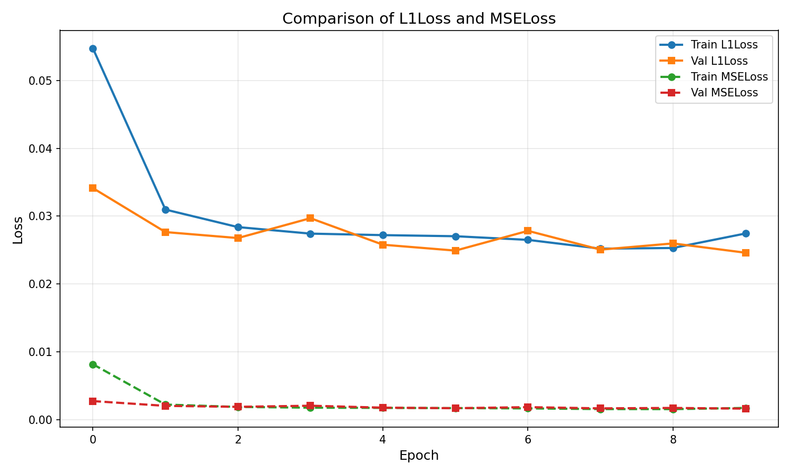

Results
Businesses and organizations need to understand public sentiment about their products, services, or brand in real-time. With millions of social media posts, reviews, and comments generated daily, manually analyzing this data is impossible. Companies struggle to gauge customer satisfaction, track brand reputation, and respond to emerging trends quickly.
Traditional sentiment analysis tools often lack accuracy, especially with complex language, sarcasm, context-dependent meanings, and multilingual content. There was a need for a more sophisticated solution that could handle real-time data streams and provide accurate sentiment classification.
Model Architecture
- Initial Feature Extraction: a single convolutional layer reads the input image and extracts its initial low-level features.
- Deep Feature Learning: A series of 8 residual blocks. Using residual connections enhance the performance, as it allows the network to go very deep to learn complex features without suffering from the vanishing gradient problem.
- Efficient Upsampling: Instead of using a traditional transposed convolution, nn.PixelShuffle layer was used. This layer first increases the number of channels and then intelligently shuffles them into the spatial dimensions, resulting in a clean, high-quality upscale.
Training Process
Comparison between L1 Loss and MSE Loss for super-resolution training
Combined training curves for L1 Loss and MSE Loss
Choice of Loss Function
While MSE Loss is a popular choice, it heavily penalizes large errors, which often causes the model to produce safe, over-smoothed, and blurry images.
L1 Loss is less sensitive to outliers and encourages the model to preserve sharper details and more realistic textures, which is exactly what a super-resolution is tasked. As the training graphs show, both losses are tracked by comparing their behavior.
Additionally, the selected scoring function demonstrates better convergence properties during training, leading to more stable gradients and faster training times. This was crucial for training the deep residual network effectively while maintaining high-quality output.
Training Configuration
Dataset
Trained on a large dataset of high-resolution images with various downsampling factors.
Optimizer
Used Adam optimizer with learning rate scheduling for stable convergence.
Batch Size
Optimized batch size for memory efficiency while maintaining training stability.
Training Epochs
Trained for multiple epochs with early stopping to prevent overfitting.
Tech Stack
Machine Learning
NLP Libraries
Backend
Frontend
Results & Impact
The NLP sentiment analyzer achieved 89.2% accuracy on a diverse test set of social media content, significantly outperforming baseline models. The system successfully processes over 1,000 texts per minute and provides real-time sentiment analysis with sub-second response times.
The application has been used to analyze customer feedback, monitor brand sentiment, and track public opinion on various topics. The visualization dashboard helps users identify trends and patterns in sentiment over time, enabling data-driven decision-making.